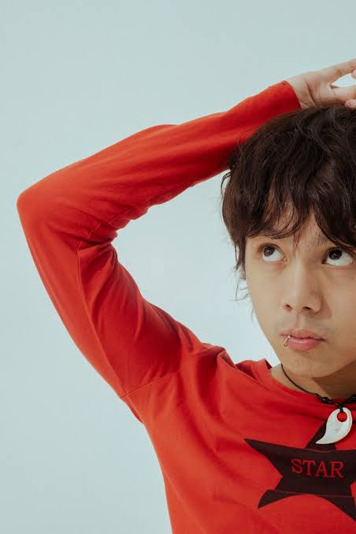
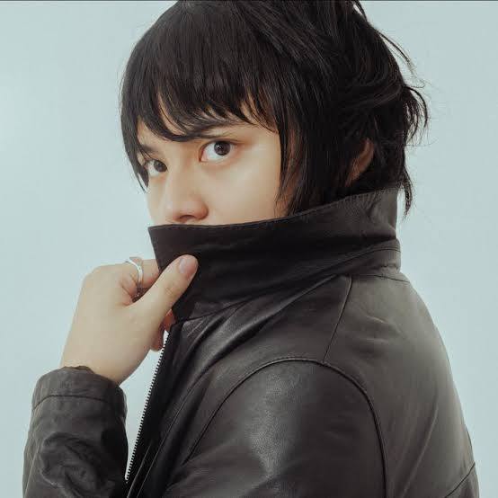
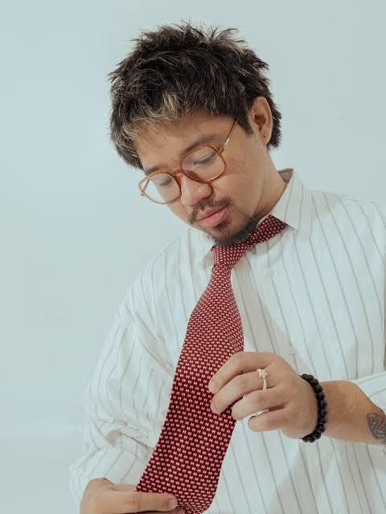

Meet the Members
Click a member card to learn more about each IVOS member!

Zild Benitez
Bassist / Vocalist
Read More

Blaster Silonga
Lead Guitar / Co-Vocalist
Read More

Badjao de Castro
Drums / Percussion
Read More
Unique Salonga
Lead Vocals / Rhythm Guitar